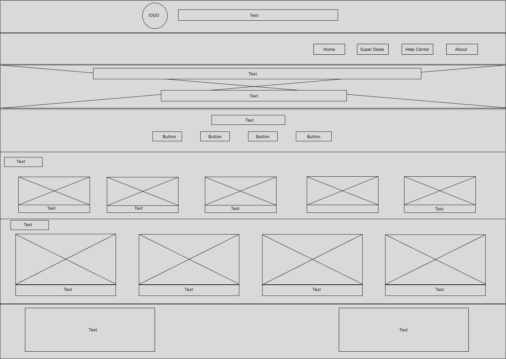
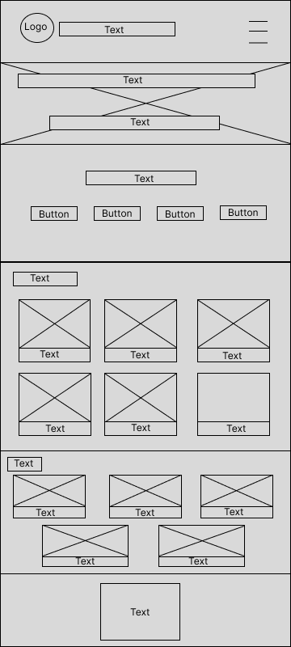

Site name: Sheger Online Shopping
The site name "Sheger Online Shopping" represents a dedicated e-commerce platform for smartphones and laptops, catering to users who seek reliable and high-quality devices.
Site Purpose:
The purpose of the Sheger Online Shopping website is to provide a convenient and reliable platform for purchasing smartphones and laptops. It aims to offer customers a seamless online shopping experience by combining an extensive selection of high-quality products, user-friendly navigation,and excellent customer support.
Scenarios:
How can a customer easily find an affordable smartphone that fits their budget using Sheger Online Shopping?
What laptops are best suited for students or professionals?
Color Schema
| Primary | Secondary | Tertiary | Text |
|---|---|---|---|
| #003366 | #0056b3 | #808080 | #000000 |
Where the colors are to be used
Primary color and text color will be used in the navigation menu, and footers.
Secondary color will be used for buttons and call-to-action elements.
Tertiary color will be used in the background for header and sections.
Typography
Heading Font: roboto-regular
Paragraph Font: roboto-thin
Wireframe (homepage)
Wireframe for large screens
Wireframe for small screens
